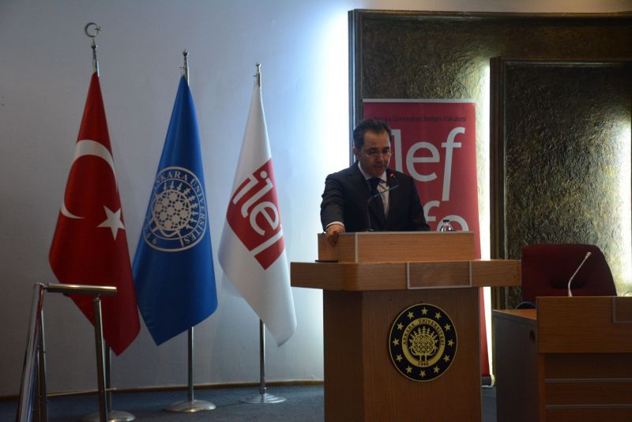

İLEF Uyum Haftası:
16 EylülİLEF tarihindeakademisyenler ve öğrencilerimizin katılımıyla gerçekleştirdiğimiz açılış etkinliğimiz ile yeni döneme adım attık. AçılışımızıDekan V. Prof. Dr. Fatih Keskin, Rektör Yardımcısı Prof. Dr. Hatice Bakkaloğlu’nun konuşmaları ve Rektörümüz Prof. Dr. Necdet Ünüvar’ın hoş geldiniz mesajıyla gerçekleştirdik. Programın devamında, mezunlarımızdan Alper Şahin’in İLEF’teki eğitim ve meslek yaşamı deneyimlerini paylaştığı konuşma sonrası yeni kayıt yaptıran öğrencimiz ile birlikte sembolik kalem devri töreni düzenledik.